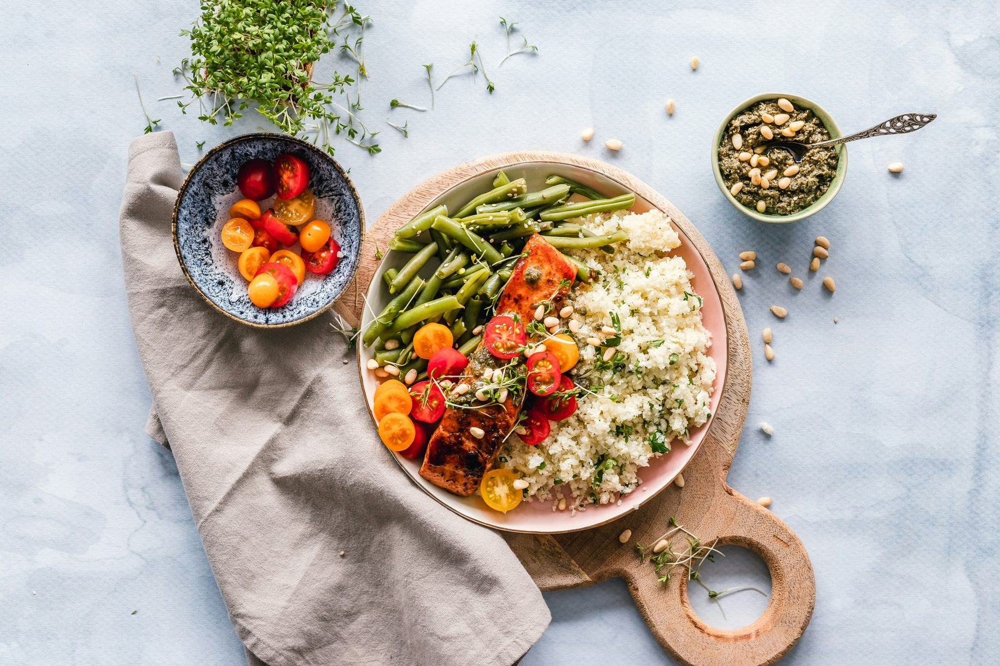

Get your daily calories split into macros for keto, vegan, paleo, Mediterranean, or a standard balanced diet.
Calculate My Macros ↓
Same calorie calculation, macros split according to your chosen diet.
Keto deliberately restricts carbs to roughly 20-50g per day (often under 10% of calories) to shift the body toward burning fat and ketones for fuel instead of glucose. Protein stays moderate rather than high, since excess protein can be converted to glucose and interfere with ketosis for some people, and the freed-up calories are made up almost entirely with fat.
Plant-based staples like grains, legumes, and fruit are naturally more carb-dense than animal proteins and fats, so vegan diets tend to land higher in carbs by default rather than by deliberate design. Getting adequate protein requires more intentional planning, since plant proteins are generally less concentrated per 100g than animal sources and need to be combined across varied sources.
Paleo excludes grains, legumes, and dairy, replacing those calories with more meat, fish, vegetables, nuts, and fruit — which naturally shifts the split toward higher protein and fat with moderate carbs, mostly from vegetables and fruit rather than grains. The higher protein target also supports satiety, which is one reason many people find paleo easier to stick to for weight management.
The Mediterranean pattern emphasises olive oil, fish, whole grains, vegetables, and legumes, landing on a moderate carb, moderate protein, and moderately-high fat split — with an emphasis on unsaturated fat sources over saturated. It's consistently one of the most researched diets for long-term cardiovascular health outcomes, not just weight management.
This calculator first estimates your Total Daily Energy Expenditure (TDEE) using the Mifflin-St Jeor equation for BMR, multiplied by an activity factor — the same underlying calculation as our main Calorie & Macro Calculator. Your total daily calories don't change based on which diet you pick; only how those calories are allocated across protein, carbs, and fat changes, using published macro ranges typically associated with each dietary pattern.
The percentages used here represent typical, commonly cited ranges for each diet — individual keto practitioners, for instance, may run anywhere from 5-10% carbs, and 'paleo' isn't a single standardised ratio either. Treat these splits as a reasonable starting template to adjust based on your own results and preferences, not an exact prescription. If you have a medical condition (particularly diabetes or kidney disease), consult a doctor or dietitian before adopting a restrictive diet pattern like keto or carnivore-adjacent paleo.
Our standard calorie and macro calculator for any goal.
Open calculator →Calculate net carbs from total carbs, fiber, and sugar alcohols.
Open calculator →Compare macros, evidence, and pros and cons of popular diets.
Open →Everything you need to know about starting and maintaining keto.
Read →